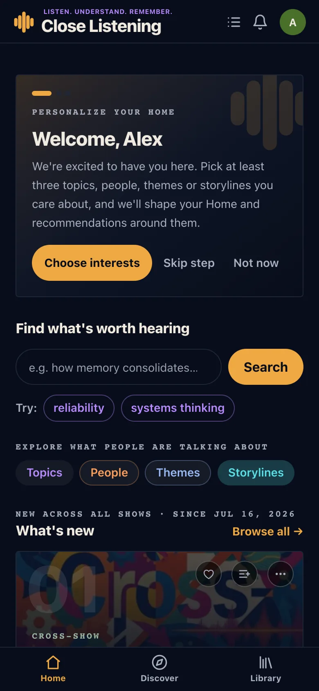
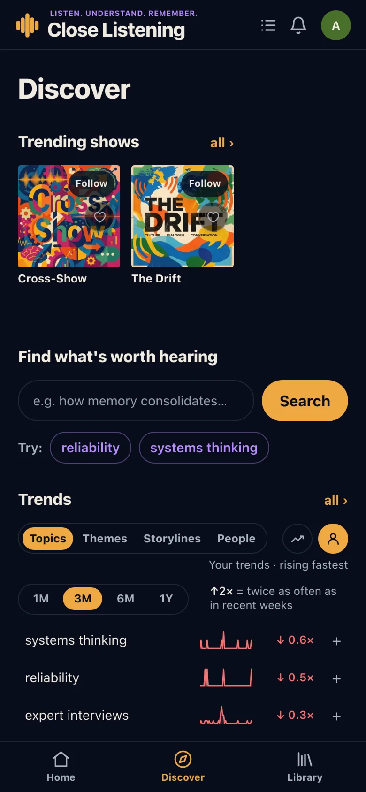
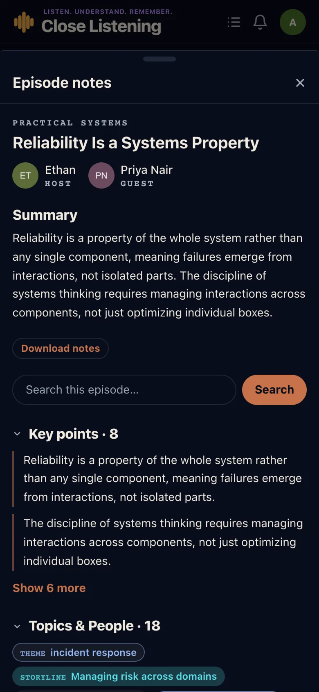
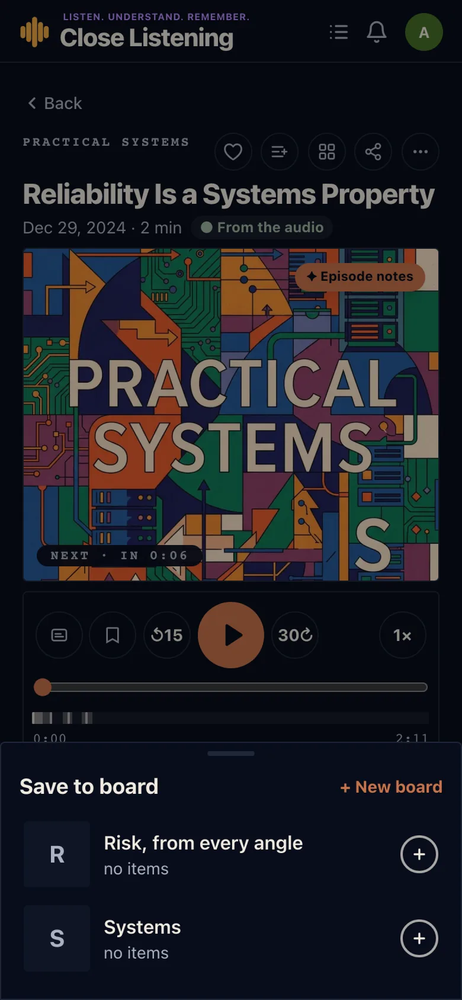

Player
- The mini-player has a ✕ that stops playback and keeps your place.
- After saving a moment, its bookmark stays a round icon instead of a pill that slid off screen.
- No more blur behind the controls over the artwork.
Release 1.0.3 · Beta
1.0.3 rebuilt Home around the listener: a guided start for a new account, recommendations from what you actually listen to, and your own trends first. Episode notes got shorter and easier to read, and Android stopped drawing blank areas.
Home
A new account is welcomed by name and walked through three short steps: pick at least three topics, people, themes or storylines, follow a few shows, and you are set.

Discover
Trends now open on your own listening: what is rising in the topics, themes, storylines and people you hear. Switch to everyone's trends, or from rising to most talked about, with one tap.

Episode notes
Episode notes open short: two key points, one row of topics and people, four insights, three related episodes. Show more opens the rest.

Boards
Saving to a board opens one sheet listing every board with its picture and count: ✓ where the episode already is, ⊕ to add it, and + New board. "Collections" are called boards everywhere now.

Also in 1.0.3
Changed or moved
Something not working as described? See the known issues.